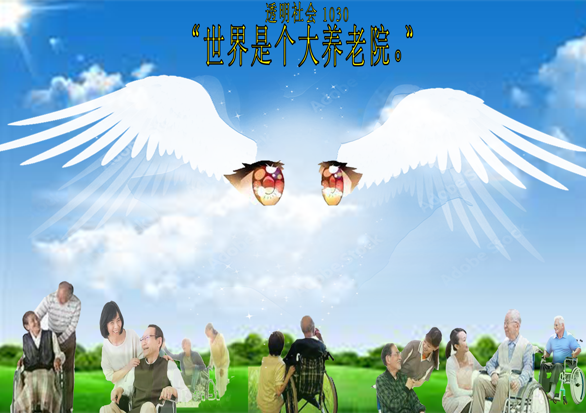

一直呆在家中，好像没有人可以交流，日子一天一天的过，电子产品也越来越玩不转，该怎么办呢？ 别担心，我们来陪你啦！ ❁｡✩°♡｡❁✩⑅°˖❁｡✩°♡｡❁ 没错，我们生活在一个老人的世界里。 养老院是很恬静的地方，没有人会大吵大闹。养老院是很温馨的地方，大家都穿着干净的制服，回头望去一尘不染的街道绿化和光辉的岁月。 在按下静音键之后一起沉沉睡去，忘年交的我们一起吞下一把一把的保健品，真想快点离开我的青春期，快点成为你。 什么？不断在指尖流逝的年纪与时间，死死攥着的往事和力量的就这么飘散在模糊的夕阳中吗？嘴巴里的牙齿和规则一起落下，把整个城市浸泡在蜂蜜里后滴落在衣角和裤裆上，慢慢的明天和昨天一样变化，反正也不会担心蛀牙了对吧。 ❁｡✩°♡｡❁✩⑅°˖❁｡✩°♡｡❁ 既然如此，还没睡着的我们打算用又甜又痛的爱去回馈这个大养老院~ 我们会驾驶着我们的痛三轮车（透明社会 | 痛痛三轮车 | 告诉我一个有糖尿病的动漫角色），穿梭在这片年迈祥和的社区中，用振奋的音乐帮助老人活动身体，用色彩鲜明的装束博老人一笑。现场还有免费测血压，修手机电脑，回收废品，按摩缝纫等种种助老活动，不论你是年轻的还是年迈的老人，都来玩吧！ ❁｡✩°♡｡❁✩⑅°˖❁｡✩°♡｡❁ 来自杭州+南京的广场舞音乐选择者： DJ同披颜：幽默人生，认真音乐！ DJ苏北电器：you meet me in a very 苏北 time of my life. ❁｡✩°♡｡❁✩⑅°˖❁｡✩°♡｡❁ 以之前痛车工作坊制作的三轮车为平台，本次活动以养老院为主题举办了一场社区音乐活动（实际上是对当时南京市政府打击万圣节庆祝活动的回应）。邀请了来自杭州的DJ童皮艳和来自南京的DJ苏北电巡游透明社会社区，三轮车上配备了音响系统、DJ台和血压计，将两个年龄群体并置并促进互动。（有趣的是，一些居民试图劝阻活动，这也是互动的一部分。） Using a tricycle created during a previous itasha (decorated car) workshop as a platform, this event featured a community music activity themed around a nursing home (actually a response to the Nanjing municipal government's crackdown on Halloween celebrations at the time). DJs Tong Piyan from Hangzhou and DJ Su Bei Electric from Nanjing were invited to tour the Transparent Society's community, where the tricycle, equipped with a sound system, DJ booth, and blood pressure monitor, juxtaposed the two age groups and facilitated interaction. (Interestingly, some residents tried to dissuade the event, which was also part of the interaction.)